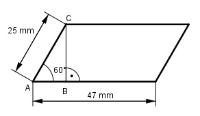

Aufgabe 105 Eine 1,2 m lange Stahlschiene (Dichte 7,85 g/cm³) hat als Grundfläche ein Parallelogramm dessen lange Seite 47 mm misst und mit der kurzen Seite von 25 mm einen Winkel von 60° einschließt. Wie groß ist ihre Masse m?  Im Dreieck ABC gilt: BC sin 60° = ---- | *AC AC BC = sin 60° * AC = 0,866 * 25 mm BC = 21,65 mm = hParallelogramm V = G * l 1,2 m = 120 cm G = g * hParallelogramm = 47 mm * 21,65 mm G = 1 018 mm² = 10,18 cm² V = 10,18 cm² * 120 cm = 1 222 cm³ m = V * р = 1 222 cm³ * 7,85 g/cm³ = 9 593 g = 9,593 kg